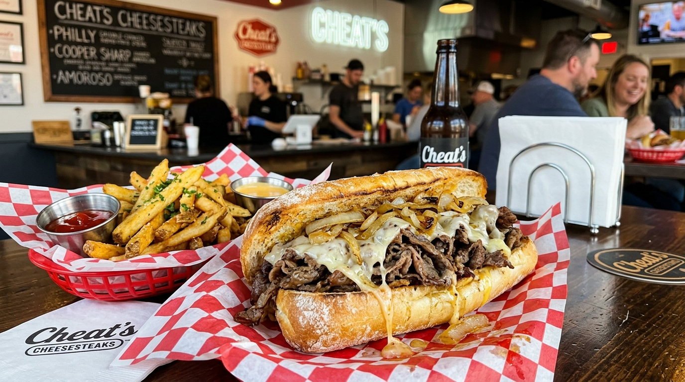

The "Oli Italiano"
Prosciutto di Parma, spicy capicola, mortadella, Genoa salame, aged provolone, shredded cabbage, and castelvetrano olive tapenade.
Discover Sandwich Craft →Charlotte's premier Italian walk-up deli window at 3120 N Davidson St in NoDa. Serving our iconic "Oli Italiano" piled high with prosciutto, mortadella, capicola, and castelvetrano tapenade on homemade toasted benne seed rolls, morning egg sandwiches, and homemade soft serve.

House-baked benne seed rolls, prime imported salumi, & morning walk-up energy.
Prosciutto di Parma, spicy capicola, mortadella, Genoa salame, aged provolone, shredded cabbage, and castelvetrano olive tapenade.
Discover Sandwich Craft →Served 8:00 AM – 11:00 AM: hot pimento bacon egg sandwiches ("P-Eggy B"), "Cappa Cappa Egga", and homemade Italian soft serve all day.
Discover Breakfast →3120 N Davidson St. Open Tuesday–Sunday from 8:00 AM – 8:00 PM for fast walk-up pickup, patio dining, and takeout.
View Hours & Location →